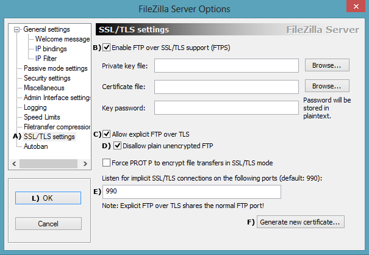
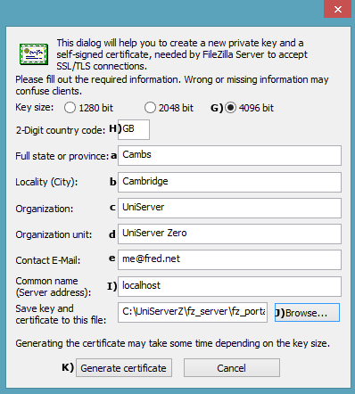
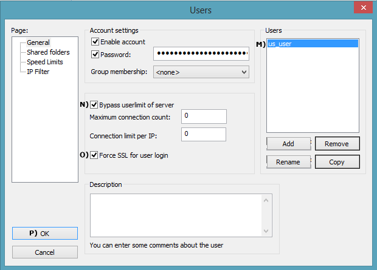
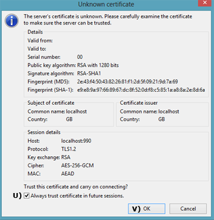
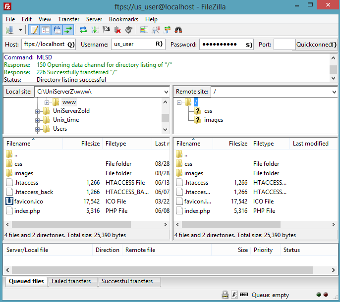

|
FileZilla SSL part 1
|
You can run an unsecured FTP server over the Internet. However, it is strongly recommended that all FTP communications be encrypted using SSL. Although initially intimidating, it is relatively easy to configure a secure FTP server. Procedure is incremental, allowing you to test each stage. First, create a server certificate and ensure it runs on a local network. Secondly, configure for Internet access.
This procedure has been split over two pages, covering each distinct area in detail.
Create Server certificate
FileZilla has a built-in certificate generator, making this process very easy.
Enable SSL support
- Start UniServer FileZilla Controller: Double-click on UniFzController.exe
- Start FileZilla Server: Click Start FZ Server
- Start FileZilla Interface: Click on Start Interface and, on the Enter server to administrate window, click Connect
- Select Edit > Settings
- From the left menu, click on FTP over TLS settings (A).
- Check Enable FTP over SSL/TSL support (FTPS) (B).
- Confirm Allow explicit FTP over TLS is checked (C).
- Check Disallow plain unencrypted FTP (D).
- Confirm Listen for implicit FTP over TLS connections on the following ports displays 990 (E).
- Click Generate new certificate... (F).
Note: No need to fill in Private key or Certificate file paths; these are automatically filled in after the certificate is generated. We are not going to password protect the certificate. Therefore, leave Key password blank.
|
|

|
Fill in certificate details
- Select Key size 4096 bit (G).
- Insert 2-Digit country code (H).
- Fill in real or dummy information (a-e).
- Fill in Common name - Use localhost (I) or your real domain name
- Use Browse... (J) and navigate to folder C:\UniServerZ\fz_server\fz_portable
This is where the certificate will be saved.
- Click Generate certificate button (K); this will take a while.
- The certificate generator window closes. Click OK on the next window.
- Confirm Private key and Certificate file paths have been filled in and contain C:\UniServerZ\fz_server\fz_portable\certificate.crt
- When complete, click OK button (L).
Note: Check folder C:\UniServerZ\fz_server\fz_portable contains your new server certificate certificate.crt
|
|

|
Force SSL for user login
- From FileZilla Interface, select Edit > Users
- Select a user account; for example, us_user (M).
- Check Bypass userlimit of server (N).
- Check Force TLS for user login (O).
- Click OK (P).
- Restart server.
|
|

|
FileZilla portable client
The FileZilla portable client is ideal for testing and highly recommended as your main FTP client. It is assumed you have downloaded and saved this to folder fz_client. If not, this quick how-to will be of use:
- Create new folder c:\fz_client
- Download client from SourceForge
- Save downloaded file FileZillaPortable_x.x.x.x.paf.exe to folder c:\fz_client
- Double-click file FileZillaPortable_x.x.x.x.paf.exe, which extracts client. No need to change any parameters.
- To run client, navigate to folder C:\fz_client\FileZillaPortable and double-click file FileZillaPortable.exe
FileZilla Server Local test
Using the FileZilla client makes testing our secure FTP server very easy. To test server with client on same PC (Local testing), proceed as follows:
- Start FileZilla server
- Start FileZilla client, shown on right
- Enter host: ftps://localhost (Q)
- Enter username: us_user (R)
- Enter password: us_user123 (S)
- Click Quickconnect (T)
Unknown Certificate pop-up is displayed.
- Check box Always trust... (U)
- Click OK (V)

|
|
FileZilla Server Local test result
The remote site window will show the content of root folder www (or root folder configured by the user).

|
FileZilla Server Local network test
On another PC connected to your network, copy the FileZilla client and repeat the above steps 2-8.
Note: only step 3 is different; see below.
- Enter host: ftps://192.168.1.6 (Q)
◦ The IP address (192.168.1.6) must match the PC you are running the FTP server on.
|
|
FileZilla Server Local network test result
Identical to that for Local test; the remote site window (on the right) will show the content of root folder www (or root folder configured by the user).
|
Summary
The above has shown how to secure an FTP server on a local network. If you are running a wireless network, data can be intercepted by sniffing the radio signals. Should your basic wireless security be compromised, FTP encryption will provide another hurdle, making it more difficult for that data to be accessed.
You also need the above security when FTPing data across the Internet. Before proceeding to FileZilla SSL part 2, make sure you can securely access FTP locally.
--oOo--
|